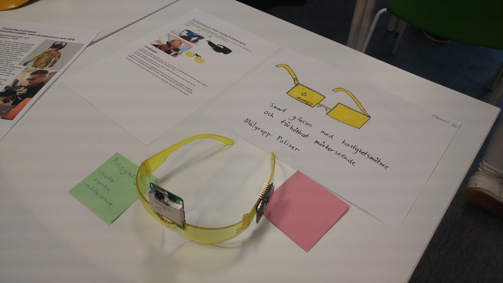

Polisglasögon med inbyggd hastighetsmätare, värmekamera och mörkerseende i glasögonen. Detta ska underlätta för polisen att ta fast framför allt fortkörare.
• Det finns en slags laserpekare som man ser när man har glasögonen på sig som riktar in sig på fordon som gör att de visar hastigheten fordonet rör sig i.
• Det finns inbyggt i glasögon så du ser värme, vilket kan göra att man ser formen av en människa som gömmer sig eller liknande.
• Det finns en knapp på sidan av glasögonen som gör att när man trycker på den så ändras glasögonen och blir istället anpassade till mörker, vilket gör att man ser klart och bra i mörkret.
• Dubbelklickar man på den lila knappen så tar dem en “skärmbild” och har som bevis senare.
Mitt namn är Hampus jag är 17 år gammal och går Thoren innovations school i Helsingborg teknik linjen och inriktning design.
Mitt namn är Oscar jag är 17 år gammal och går Thoren innovations school i Helsingborg teknik linjen och inriktning design.